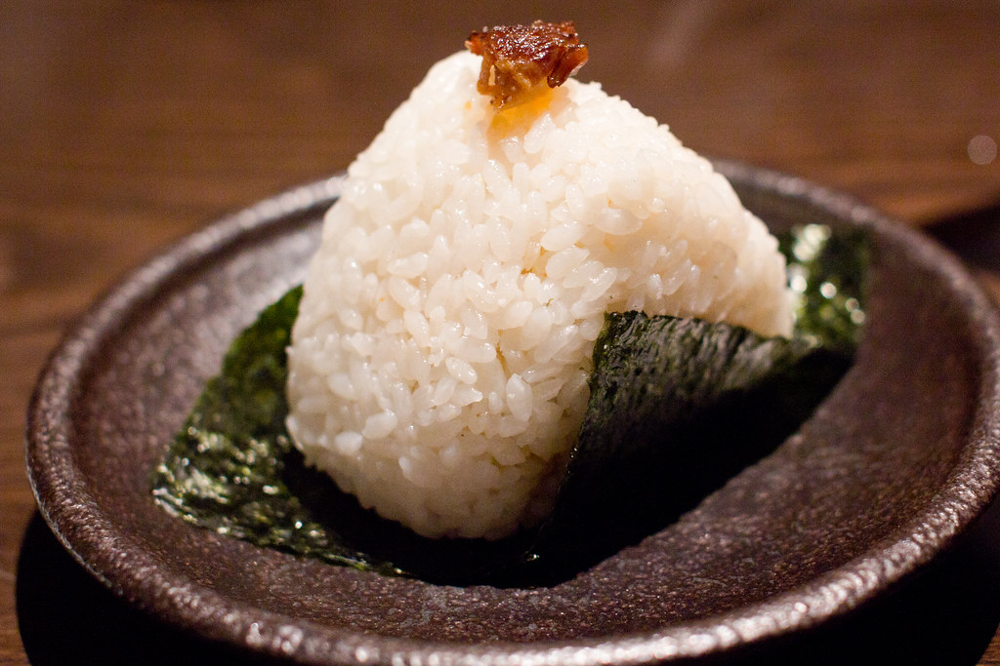
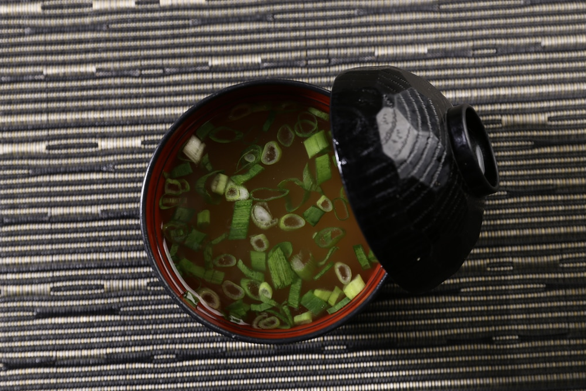
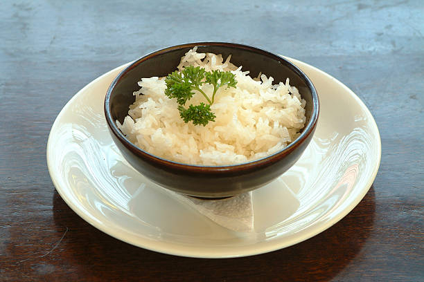
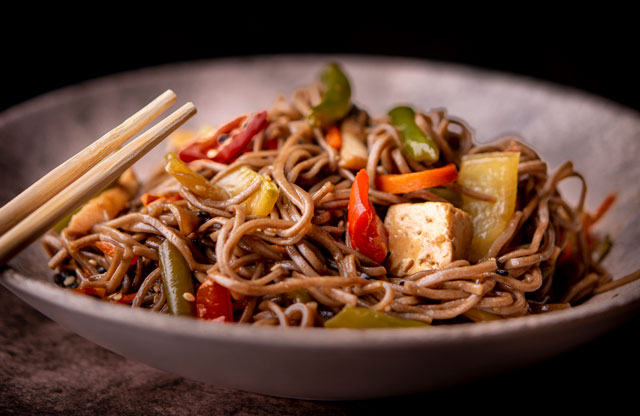
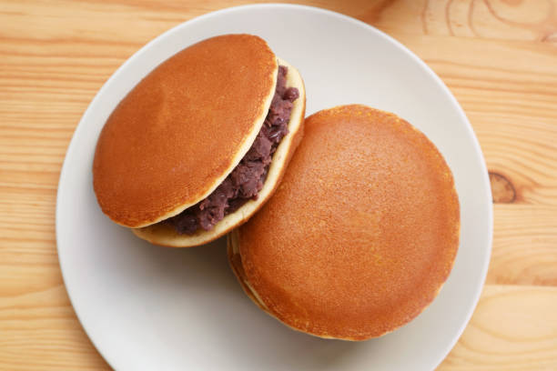
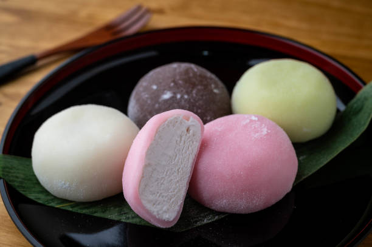

Onigiri (Bolinho de Arroz)

Ingredientes:
- 2 xícaras de arroz japonês cozido
- 1 folha de nori (alga) cortada em tiras
- 1 pitada de sal
- Recheio opcional: atum com maionese, salmão grelhado ou ameixa japonesa
Modo de Preparo:
- Molhe as mãos e polvilhe um pouco de sal.
- Pegue uma porção de arroz e modele em formato de triângulo ou bola.
- Se quiser, coloque um pouco de recheio no centro antes de fechar.
- Enrole com uma tira de alga e pronto!
Missoshiru (Sopa de Missô)

Ingredientes:
- 2 colheres de sopa de pasta de missô
- 500ml de água
- 1 colher de sopa de hondashi (tempero de peixe)
- ½ xícara de tofu em cubos
- 1 colher de sopa de cebolinha picada
Modo de Preparo:
- Ferva a água e dissolva o hondashi.
- Adicione a pasta de missô e mexa bem.
- Acrescente o tofu e cozinhe por 2 minutos.
- Finalize com a cebolinha e sirva quente.
Sunomono (Salada de Pepino)

Ingredientes:
- 1 pepino japonês fatiado bem fino
- 1 colher de sopa de vinagre de arroz
- 1 colher de chá de açúcar
- 1 pitada de sal
- Gergelim para decorar
Modo de Preparo:
- Misture o pepino com o sal e deixe descansar por 10 minutos.
- Enxágue e escorra bem.
- Em uma tigela, misture o vinagre e o açúcar até dissolver.
- Jogue sobre o pepino e misture.
- Finalize com gergelim e sirva gelado.
TamagoYaki (Omelete)
Ingredientes:
- 2 ovos
- 1 colher de chá de açúcar
- 1 colher de chá de molho de soja (shoyu)
- Óleo para untar
Modo de Preparo:
- Bata os ovos com o açúcar e o shoyu.
- Aqueça uma frigideira com um pouco de óleo.
- Despeje uma camada fina da mistura e cozinhe até firmar.
- Enrole e empurre para o lado da frigideira.
- Despeje mais um pouco da mistura, espere firmar e enrole novamente.
- Repita até terminar os ovos. Fatie e sirva.
Gohan (Arroz)

Ingredientes:
- 2 xícaras de arroz japonês
- 2 xícaras de água
Modo de Preparo:
- Lave o arroz até a água ficar transparente.
- Coloque o arroz e a água na panela.
- Cozinhe em fogo alto até ferver, depois abaixe e tampe.
- Cozinhe por 15 minutos e desligue.
- Deixe descansar por 10 minutos antes de servir.
Yakisoba Simples

Ingredientes:
- 200g de macarrão para yakisoba
- ½ cenoura fatiada
- ½ pimentão fatiado
- ½ cebola fatiada
- 200g de frango em tiras
- 2 colheres de sopa de molho shoyu
- 1 colher de sopa de óleo de gergelim (opcional)
Modo de Preparo:
- Cozinhe o macarrão e reserve.
- Em uma frigideira, refogue o frango com um pouco de óleo.
- Adicione os legumes e refogue por 3 minutos.
- Acrescente o macarrão e o shoyu, misturando bem.
- Finalize com óleo de gergelim e sirva quente.
Dorayaki (Panqueca)

Ingredientes:
- 2 ovos
- 100g de açúcar
- 1 colher de sopa de mel
- 130g de farinha de trigo
- ½ colher de chá de fermento em pó
- 50ml de água
- Doce de feijão azuki (anko) ou outro recheio de sua preferência
Modo de Preparo:
- Misture os ovos, o açúcar e o mel até obter uma mistura homogênea.
- Peneire a farinha e o fermento, adicionando à mistura. Mexa bem.
- Acrescente a água aos poucos até obter uma massa lisa.
- Aqueça uma frigideira antiaderente e despeje pequenas porções da massa.
- Cozinhe até formar bolhas na superfície, depois vire e doure o outro lado.
- Recheie com doce de feijão azuki e feche como um sanduíche.
Gyoza (Pastel)

Ingredientes:
- 200g de carne de porco moída
- 1 xícara de repolho picado
- 1 dente de alho picado
- 1 colher de chá de gengibre ralado
- 1 colher de sopa de shoyu
- Massa pronta para gyoza
- Óleo para fritar
- Água para cozinhar
Modo de Preparo:
- Misture a carne de porco, repolho, alho, gengibre e shoyu até formar um recheio homogêneo.
- Coloque uma pequena porção do recheio no centro da massa de gyoza.
- Umedeça as bordas da massa com água e dobre ao meio, apertando as laterais.
- Para fritar: aqueça uma frigideira com óleo, doure a base dos gyozas, adicione um pouco de água e tampe até cozinhar.
- Para cozinhar: ferva água e cozinhe os gyozas até ficarem macios.
Mochi Simples (Bolinho Doce)

Ingredientes:
- 1 xícara de farinha de arroz glutinoso
- ¾ xícara de água
- ¼ xícara de açúcar
- Amido de milho (para polvilhar)
- Recheio opcional: pasta de feijão azuki, chocolate ou morango
Modo de Preparo:
- Misture a farinha de arroz, água e açúcar até formar uma massa homogênea.
- Cozinhe no micro-ondas por 1 minuto, mexa e repita até obter uma massa pegajosa.
- Polvilhe amido de milho em uma superfície e modele pequenos bolinhos.
- Se desejar, recheie com pasta de feijão azuki ou outra opção antes de fechar.
- Sirva frio ou levemente aquecido.